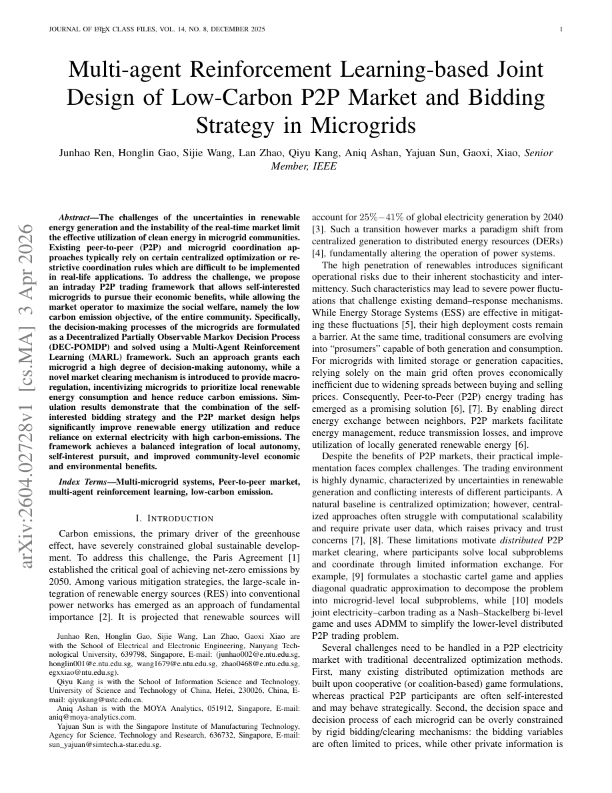
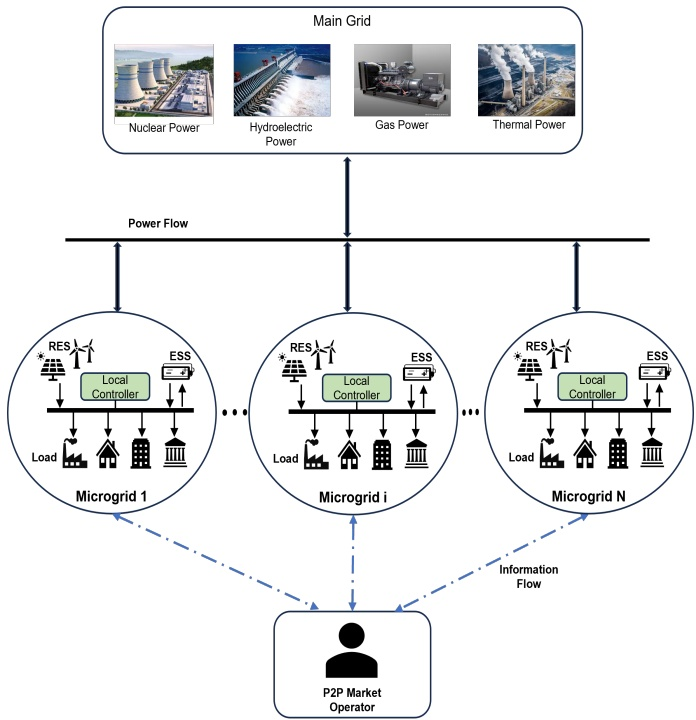
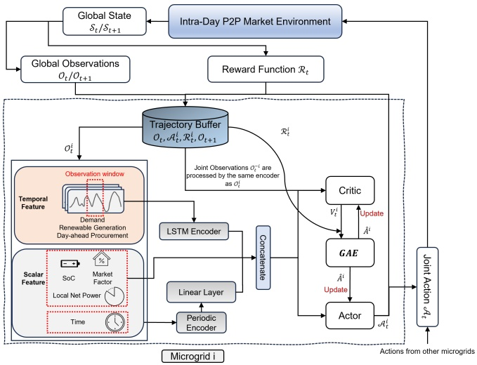
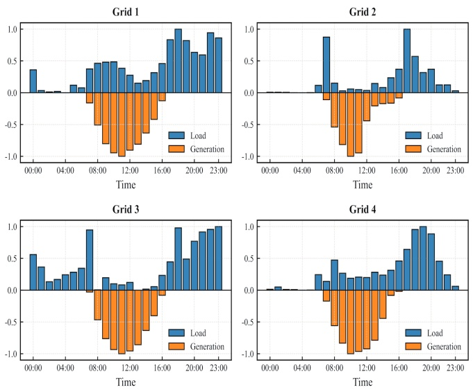
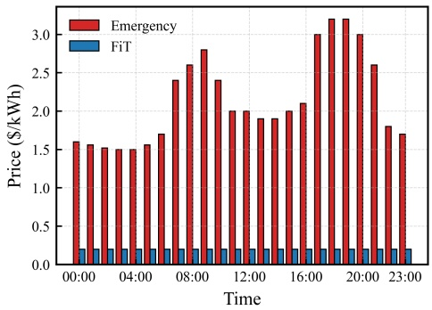
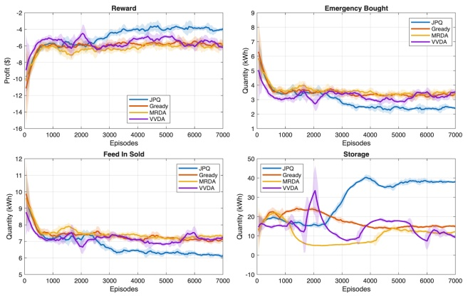
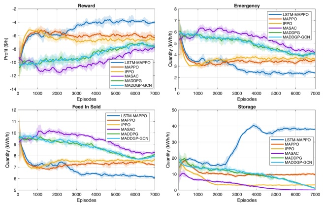

Multi-agent reinforcement learning-based joint design of low-carbon P2P market and bidding strategy in microgrids
- 期刊：Applied Energy
- DOI：10.1016/j.apenergy.2026.128693
- 版本：作者预印本
- 原文页数：10
- 文本解析：MinerU 4.0.12 / basic / 全文
- 原始 PDF
- 逐页截图
以下为机器解析的原文，未翻译、未改写。公式、表格和双栏阅读顺序可能存在识别误差，请以原始 PDF 和逐页截图为准。
章节目录
论文首页

全文
Junhao Ren, Honglin Gao, Sijie Wang, Lan Zhao, Qiyu Kang, Aniq Ashan, Yajuan Sun, Gaoxi, Xiao, Senior Member, IEEE
Abstract—The challenges of the uncertainties in renewable energy generation and the instability of the real-time market limit the effective utilization of clean energy in microgrid communities. Existing peer-to-peer (P2P) and microgrid coordination approaches typically rely on certain centralized optimization or restrictive coordination rules which are difficult to be implemented in real-life applications. To address the challenge, we propose an intraday P2P trading framework that allows self-interested microgrids to pursue their economic benefits, while allowing the market operator to maximize the social welfare, namely the low carbon emission objective, of the entire community. Specifically, the decision-making processes of the microgrids are formulated as a Decentralized Partially Observable Markov Decision Process (DEC-POMDP) and solved using a Multi-Agent Reinforcement Learning (MARL) framework. Such an approach grants each microgrid a high degree of decision-making autonomy, while a novel market clearing mechanism is introduced to provide macroregulation, incentivizing microgrids to prioritize local renewable energy consumption and hence reduce carbon emissions. Simulation results demonstrate that the combination of the self-interested bidding strategy and the P2P market design helps significantly improve renewable energy utilization and reduce reliance on external electricity with high carbon-emissions. The framework achieves a balanced integration of local autonomy, self-interest pursuit, and improved community-level economic and environmental benefits.
Index Terms—Multi-microgrid systems, Peer-to-peer market, multi-agent reinforcement learning, low-carbon emission.
I. INTRODUCTION
Carbon emissions, the primary driver of the greenhouse effect, have severely constrained global sustainable development. To address this challenge, the Paris Agreement [1] established the critical goal of achieving net-zero emissions by 2050. Among various mitigation strategies, the large-scale integration of renewable energy sources (RES) into conventional power networks has emerged as an approach of fundamental importance [2]. It is projected that renewable sources will account for 25%−41% of global electricity generation by 2040 [3]. Such a transition however marks a paradigm shift from centralized generation to distributed energy resources (DERs) [4], fundamentally altering the operation of power systems.
The high penetration of renewables introduces significant operational risks due to their inherent stochasticity and intermittency. Such characteristics may lead to severe power fluctuations that challenge existing demand–response mechanisms. While Energy Storage Systems (ESS) are effective in mitigating these fluctuations [5], their high deployment costs remain a barrier. At the same time, traditional consumers are evolving into “prosumers” capable of both generation and consumption. For microgrids with limited storage or generation capacities, relying solely on the main grid often proves economically inefficient due to widening spreads between buying and selling prices. Consequently, Peer-to-Peer (P2P) energy trading has emerged as a promising solution [6], [7]. By enabling direct energy exchange between neighbors, P2P markets facilitate energy management, reduce transmission losses, and improve utilization of locally generated renewable energy [6].
Despite the benefits of P2P markets, their practical implementation faces complex challenges. The trading environment is highly dynamic, characterized by uncertainties in renewable generation and conflicting interests of different participants. A natural baseline is centralized optimization; however, centralized approaches often struggle with computational scalability and require private user data, which raises privacy and trust concerns [7], [8]. These limitations motivate distributed P2P market clearing, where participants solve local subproblems and coordinate through limited information exchange. For example, [9] formulates a stochastic cartel game and applies diagonal quadratic approximation to decompose the problem into microgrid-level local subproblems, while [10] models joint electricity–carbon trading as a Nash–Stackelberg bi-level game and uses ADMM to simplify the lower-level distributed P2P trading problem.
Several challenges need to be handled in a P2P electricity market with traditional decentralized optimization methods. First, many existing distributed optimization methods are built upon cooperative (or coalition-based) game formulations, whereas practical P2P participants are often self-interested and may behave strategically. Second, the decision space and decision process of each microgrid can be overly constrained by rigid bidding/clearing mechanisms: the bidding variables are often limited to prices, while other private information is treated as exogenous and truthfully reported, which restricts autonomy in local energy management and strategic trading. Third, carbon-emission considerations are often imposed as hard constraints rather than being encoded into market incentives, providing only limited economic motivation for proactive decarbonization [11].
Multi-Agent Reinforcement Learning (MARL) offers a favorable option for tackling the challenges mentioned above [12]. Specifically, MARL allows distributed energy entities to make autonomous and adaptive decisions under partial observability. By allowing microgrids to learn through continuous interactions, MARL helps pave the way toward self-organized intelligent energy systems capable of robustly mitigating the operational instability and uncertainties arising from renewable intermittency and prediction errors, and steadily achieve low carbon emission of the whole system.
In this study, we propose a decentralized market-learning framework for real-time P2P electricity trading of microgrids. The core principle of this framework is to couple an incentiveaware market clearing mechanism with decentralized sequential decision-making: the market mechanism encodes systemlevel objectives into bidding clearing mechanism, while microgrids independently adapt their strategies based on local observations and historical interactions. In this framework, coordinated system-level outcomes are not imposed explicitly but emerge from the interaction between rational agents and the designed market incentives, making it suitable for complex, partially observable P2P environments. The main contributions of this paper are summarized as follows:
• Non-Cooperative Game Formulation. We explicitly model microgrids as rational and self-interested agents, departing from cooperative or truth-telling assumptions commonly adopted in existing P2P market studies. Their interactions are formulated as a DEC-POMDP (Decentralized Partially Observable Markov Decision Process) enabled, MARL-based learning of strategic behaviors under partial observability.
• Joint Bidding and Energy Storage Decision Space. The proposed framework endows microgrids with a coupled and flexible decision space, allowing them to jointly determine trading roles, bidding prices, traded quantities, and energy storage schedules. This design captures the intrinsic coupling between market participation and internal energy management that is overlooked by price-only or fixed-role models.
Carbon-Aware Incentive Design. The proposed framework incorporates carbon emission considerations into both the pricing signals and the double-auction clearing process, rather than imposing rigid emission constraints. By jointly shaping individual payoffs and trading priorities, the proposed design economically incentivizes lowcarbon, locally balanced trading behaviors while preserving decentralized decision autonomy.
The remainder of the paper is organized as follows. Section II reviews existing methods and technologies employed in the P2P market of multi-microgrid systems. Section III presents the overall system formulation, including the structure of the multi-microgrid systems and the electricity market framework. Section IV describes the proposed MARL-based model for the P2P market. Section V provides simulation results and discussions. Section VI concludes the paper and outlines potential directions for future research.
Existing studies on trading problems in multi-microgrid systems mainly rely on two methodological paradigms: modelbased optimization and model-free optimization (e.g., MARL).
Model-based optimization refers to frameworks in which the objective functions, constraints, and system dynamics are known or can be analytically modeled, allowing the optimal decisions to be directly derived from the model. In [13], a two-stage stochastic game model was proposed to determine the optimal energy trading strategy under supply and demand uncertainties. A distributed algorithm was further developed to obtain the stochastic Nash equilibrium using the sample average approximation technique. A stochastic cartel game was introduced in [9] to address cooperative bidding strategies among multiple microgrids in P2P energy transactions considering renewable generation and energy storage. A collaborative optimization problem for capacity planning of distributed generation units and P2P trading was investigated in [14], where a risk-averse stochastic programming framework and Nash bargaining approach were adopted to mitigate renewable energy uncertainties and ensure fairness in trading. Further, a low-carbon P2P trading model based on a master–slave nested mixed game was proposed in [15], which explicitly incorporated carbon emission flows as constraints in the game formulation.
Model-free optimization, on the other hand, enables agents to learn their individual trading strategies and energy schedules from historical data to maximize operational profitability, or optimize a certain other objective function, without requiring explicit knowledge of system dynamics. In [16], a doublesided auction-based P2P electricity market was formulated as a MARL problem, and a DA-MADDPG (Double-Side Auction Multi-Agent Deep Deterministic Policy Gradient) algorithm was proposed to maximize the profits of prosumers in a dynamic electricity market. A two-level MARL framework was developed in [17] for designing dynamic pricing policies that facilitate efficient on-site energy trading while supporting decarbonization and grid security objectives. In [18], a multi-stage dispatching method incorporating day-ahead and intraday scheduling was proposed to address uncertainties in electricity–hydrogen integrated energy systems. Moreover, [19] introduced a multi-microgrid framework combining carbon capture and utilization technologies with P2P energy trading, trained using the MAPPO algorithm to reduce both cost and carbon emissions. In addition, a recurrent neural network (RNN)-based MAPPO algorithm was presented in [20] for learning one-to-one clearing policies in the coupled energy and carbon trading markets.
In general, existing studies on multi-microgrid energy trading either rely on explicitly formulated optimization models or adopt learning-based approaches under simplified market and decision structures. Many of these studies assume cooperative behaviors, restricting the coupling between market bidding and energy storage decisions, or incorporate carbon considerations primarily through exogenous constraints or pricing components. Instead, this paper focuses on a decentralized intraday P2P trading setting in which autonomous microgrids make strategic trading and energy storage decisions through a market mechanism that jointly shapes incentives and trading outcomes under uncertainty.
III. PROBLEM STATEMENT
Consider a power distribution network comprising a main grid and a set of interconnected microgrids, as illustrated in Fig. 1. These microgrids represent diverse prosumer archetypes, including residential, industrial, and commercial sectors, characterized by distinct load profiles and energy behaviors. The main grid functions as an external energy supplier, aggregating heterogeneous generation resources that range from thermal units to large-scale clean energy units. Consequently, electricity procurement from the main grid is characterized by time-varying intensities of carbon emission, necessitating a trade-off between community economic welfare (profit maximization) and societal welfare (carbon footprint reduction).
Each microgrid operates as an autonomous agent equipped with inflexible electrical loads, local Distributed Generation (DG) units such as Photovoltaics (PV), and ESS. These assets provide the operational flexibility required for arbitrage and resilience against supply uncertainties. To maintain tractability and prioritize the analysis of the proposed P2P market mechanism and carbon accounting framework, the validation of physical power-flow constraints (e.g., line flows and AC power-flow equations) is omitted. In this specific study, we focus on active power balance and economic transactions, while transmission line congestion and reactive power flows are not considered.
A. Microgrid System
For each microgrid let denote the inelastic electricity demand and denote the generation of renewable power (e.g. PV output) at time slot t. The ESS serves as a critical flexibility asset, allowing the microgrid to arbitrage energy prices and maintain power balance under uncertainties. Let denote the stored energy level (kWh) and denote the charging or discharging rate (kW) at time t. A positive indicates charging, while a negative value indicates discharging. The state-of-charge (SoC) evolution is governed by:
where represents the time interval. The parameters and represent the charging and discharging rates, respectively.

Fig. 1. Structure of the power distribution network.
To ensure safe operation, the ESS is subject to the following constraints:
where and denote the maximum discharging (negative) or charging (positive) rates, and and denote the minimum and maximum energy capacity, respectively. is a control parameter for capacity reservation.
B. Electricity Market Framework
In this work, we employ a two-stage electricity settlement framework comprising a Day-Ahead (DA) stage and an Intraday real-time stage. The DA stage functions as the primary scheduling phase, where microgrids secure base-load electricity requirements based on forecasts of demands and renewable generation. Subsequently, the Intraday P2P market serves as a balancing mechanism, allowing agents to trade deviations caused by uncertainties, thereby reducing imbalance penalties.
1) Day-Ahead Market Mechanism: In the DA stage, the main grid publishes three distinct price signals: the standard day-ahead buying price , the emergency (real-time) buying price , and the feed-in tariff (FiT) . To reflect the marginal cost of regulation and carbon intensity, the pricing structure follows the inequality:
This hierarchy is designed to penalize reliance on real-time emergency power (often supplied by carbon-intensive peaker plants) and to discourage excessive reverse power flow. In this work, we assume is constant, while varies dynamically to reflect the scenario of real-time grid in reality.
Each microgrid i estimates its hourly load and renewable generation for the upcoming operating day. Due to limited generation capacity and unavoidable forecast errors, microgrids implement a day-ahead procurement policy to cover expected deficits. The quantity of electricity purchased from the main grid in the DA stage, , is determined by:
where represents the procurement preference factor (or safety margin) for the microgrid i. The higher the value of the more conservative the strategy. Note that in this proposed framework, active selling to the main grid is restricted to the real-time stage, while the DA stage focuses solely on securing expected deficit coverage. Since is treated as a fixed characteristic of the microgrid, the focus of this study lies in the Intraday P2P trading strategy to manage the residual energy imbalances.
C. Intraday P2P Market Mechanism
To mitigate real-time power imbalances caused by forecast uncertainties, we establish a community P2P market governed by a Double Auction clearing mechanism. While the trading decision-making is decentralized, the market clearing follows a hybrid architecture with centralized matching to improve the matching efficiency, consistent with established P2P frameworks [21], [16], [22].
At each time step t, the P2P trading process follows a sequential three-phase protocol: Quotation Submission, Market Clearing, and Settlement and Balancing.
1) Quotation Submission: In this framework, the trading role is encoded in the sign of the bidding price non-negative value indicates the microgrid acts as a buyer, while a negative value indicates that it acts as a seller. The bidding quantity represents the magnitude of the energy to be traded. To ensure economic rationality, the absolute bidding price must fall within the main grid’s price envelope:
This constraint ensures that P2P trading remains mutually beneficial compared to interacting with the main grid. The bidding quantity is bounded by
where represents the physical limit based on the agent’s role:
This formulation allows microgrids to flexibly switch roles and optimize their quotations to maximize individual utility.
Algorithm 1 Joint Price–Quantity (JPQ) Market Clearing
Mechanism
Require: Quotation set Q, System Imbalance $m _ { t } ,$ Emergency
Price $p _ { e } ^ { \mathrm { G } }$
Ensure: Trading Quantity Matrix Q, Trading Price Matrix Π
1: Initialization:
2: Partition agents into Buyers B and Sellers S
3: Sort B and S using Algorithm 2
4: Initialize matrices $\mathbf { Q } \leftarrow \mathbf { 0 } , \mathbf { \Pi } \leftarrow \mathbf { 0 }$
5: Initialize pointers: $b , s , b _ { \mathrm { s t a r t } } , s _ { \mathrm { s t a r t } } \gets 1$
6: Matching Process:
7: while $b \leq | \mathcal { B } |$ and $s \leq | \mathcal { S } |$ do
8: if $p _ { b , t } < | p _ { s , t } |$ then
9: if $m _ { t } < 0$ then
10: $b \leftarrow b + 1 , \quad b _ { \mathrm { s t a r t } } \leftarrow b _ { \mathrm { s t a r t } } + 1$
11: continue
12: else if $m _ { t } > 0$ then
13: $s \gets s + 1 , \quad s _ { \mathrm { s t a r t } } \gets s _ { \mathrm { s t a r t } } + 1$
14: continue
15: else
16: break
17: end if
18: end if
19: $\mathbf { Q } _ { b , s } \leftarrow \operatorname* { m i n } ( q _ { b , t } , q _ { s , t } ) , \mathbf { \Pi } _ { b , s } \leftarrow ( p _ { b , t } + | p _ { s , t } | ) / 2$
20: $q _ { b , t } \leftarrow q _ { b , t } - \mathbf { Q } _ { b , s } , \quad q _ { s , t } \leftarrow q _ { s , t } - \mathbf { Q } _ { b , s }$
21: if $q _ { b , t } = 0$ then
22: $b _ { \mathrm { s t a r t } } \leftarrow b _ { \mathrm { s t a r t } } + 1$
23: end if
24: if $q _ { s , t } = 0$ then
25: $s _ { \mathrm { s t a r t } } \leftarrow s _ { \mathrm { s t a r t } } + 1$
26: end if
27: $b \leftarrow b + 1 , \quad s \leftarrow s + 1$
28: if $b > | \mathcal { B } |$ then
29: $b \gets b _ { \mathrm { s t a r t } }$
30: end if
31: $\mathbf { i f } \; s > | \mathcal { S } |$ then
32: $s \gets s _ { \mathrm { s t a r t } }$
33: end if
34: end while
35: return Q, Π
2) Market Clearing: The operator aggregates all buy and sell orders, executes the matching algorithm, and determines the clearing price and traded quantities. To effectively balance the real-time demand/supply of the multi-microgrid systems, a new bidding matching mechanism is proposed with the midpoint pricing rule. This rule guarantees strict budget balance, ensuring that the market operator acts purely as a neutral facilitator without retaining any surplus. Such neutrality is essential for maintaining trust and sustaining long-term participation in P2P energy trading.
Building on the double-auction foundations in [21], Algorithm 1 is designed to produce economically feasible and system-aligned trades among microgrids. The clearing process adheres to three main design principles:
• Individual Rationality – A trade is executed only when the buyer’s bid price is no less than the seller’s ask , ensuring voluntary participation and pre-venting economically inefficient exchanges.
Algorithm 2 Market-Driven Quotation Sorting
Require: Sets of buyers $\overline { { \mathcal { B } } }$ and sellers $\overline { { S } } ,$ Market factor $m _ { t } ,$
Emergency Price $p _ { e } ^ { \mathrm { G } }$
Ensure: Sorted sets B and $\mathcal { S }$
1: Initialize Sorting Metrics:
2: For each buyer $i \in \mathcal { B } \colon \kappa _ { \underline { { 1 } } } ^ { B } \leftarrow p _ { i , t } ,$ $\kappa _ { 2 } ^ { B } \gets p _ { i , t } \cdot q _ { i , t }$
3: For each seller $j \in \mathcal { S } \colon \kappa _ { 1 } ^ { S } \leftarrow \dot { | p _ { j , t } | } , \quad \kappa _ { 2 } ^ { S } \leftarrow ( \dot { p _ { e } ^ { \mathrm { G } } } - \dot { | p _ { j , t } | } )$
$q _ { j , t }$
4: Execute Sorting based on market factor $m _ { t } ;$
5: if $m _ { t } < 0$ (Electricity Surplus) then
6: Sort B descending by $\kappa _ { 2 } ^ { \overline { { B } } }$
7: Sort S ascending by $\kappa _ { 1 } ^ { S }$
8: else if $m _ { t } > 0$ (Electricity Deficit) then
9: Sort B descending by $\bar { \kappa } _ { 1 } ^ { B }$
10: Sort S descending by $\kappa _ { 2 } ^ { \overline { { S } } ^ { \prime } }$
11: else
12: Sort B descending by $\kappa _ { 1 } ^ { B }$
13: Sort S ascending by $\kappa _ { 1 } ^ { S }$
14: end if
15: return Ordered sets B and $\mathcal { S }$
• System Incentives – In sorting algorithm (Algorithm 2), the mechanism incorporates the real-time market factor to prioritize trades that support system-level needs.
– Under a surplus , the mechanism favors buyers with greater absorption capability rather than simply selecting the highest bidders. This encourages microgrids to absorb excess renewable generation.
– Under a deficit , the mechanism prioritizes sellers capable of providing the largest welfare contribution, incentivizing energy sharing to enhance community stability.
• Equitable Matching – By iteratively examining feasible buyer-seller pairs, the mechanism ensures that microgrids submitting valid quotations receive fair access to trading opportunities. This prevents local matching bias and promotes a more balanced allocation of liquidity across participants.
3) Settlement and Balancing: After market clearing, the settlement phase executes both physical delivery and financial compensation. Buyers compensate sellers according to the clearing price matrix Π, and sellers inject the commitment power quantities into buyers based on
Because P2P trades may not fully eliminate real-time imbalances (due to market frictions, renewable energy uncertainties, or physical constraints), each microgrid adopts a hierarchical recourse strategy to resolve any residual deviations:
1) Self-Correction: The microgrid first uses its local ESS to supply the deficit, subject to the SoC and related constraints in (2).
2) Emergency Procurement: If a deficit persists after ESS discharge, the microgrid purchases emergency energy from the main grid at the penalty price
3) Feed In Strategy: For microgrid i, the total export quantity is compensated at the feed-in tariff where includes both the energy discharged to reduce over-storage and the portion of renewable surplus that cannot be accommodated by the ESS.
Under this recourse structure, the real-time power balance for each microgrid i at time t satisfies:
where and denote the microgrid’s total P2P purchase and sale quantities derived from Q. The terms and represent the charging and discharging power of the local ESS, respectively.
IV. MARL-BASED BIDDING STRATEGY IN INTRADAY P2P MARKET
In this section, the Intraday P2P trading model mentioned above can be formulated as a DEC-POMDP, which is typically solved using MARL algorithms. In this work, we develop an LSTM-MAPPO framework to handle the highdimensional, sequential, and interactive nature of this decisionmaking task. The proposed architecture follows the CTDE paradigm. Specifically, during training, a centralized critic leverages global information to provide stable value estimation and reduce gradient variance, thereby improving learning efficiency in a competitive multi-agent environment. During execution, however, each microgrid behaves autonomously, generating its bidding and storage decisions using only its own local observation history. This ensures both data privacy and scalability, while enabling robust policy learning in the stochastic and strategically complex P2P market.
A. Bidding and Energy Storage Strategies for Microgrid i
In the Intraday P2P market, each microgrid i seeks to maximize its own economic benefit by optimally selecting its bidding price, bidding quantity, and ESS reservation level. The profit-maximization problem of microgrid i is formulated as:
(13)
Here, captures the net profit of microgrid i from interacting with the main grid, while represents its profit from P2P transactions. Because the expected day-ahead purchase cost is constant when is fixed, the main-grid profit only depends on feed-in and emergency operations:
Similarly, the P2P profit of microgrid i is expressed as
where and denote the sets of matched buyers and sellers for microgrid i, with
Since the P2P clearing mechanism is strictly budgetbalanced, the total P2P profit across all microgrids is zero. Hence, the aggregate economic welfare of the community depends solely on the main-grid interactions. The system-level objective is therefore
The microgrids’ profit-maximizing bidding interactions form a decentralized and partially observable multi-agent decision process, motivating the subsequent formulation of the Intraday market as a DEC-POMDP.
The Intraday P2P trading problem can be modeled as a DEC-POMDP. A DEC-POMDP is defined by the tuple
where the components are described as follows.
1) Agents: Each agent corresponds to a microgrid participating in the P2P energy market. Agents act simultaneously and interact through the market-clearing mechanism and the physical power flow balance.
2) Global State: The global environment state at time t is denoted by
where includes the internal operational variables of microgrid i and aggregated market conditions. The global state is not directly observable to any individual agent.
3) Observation: At each time step, the observation denotes the set of all agents’ observations. For each agent it receives a local observation
where is the market factor summarizing the supply–demand condition, is the SOC of microgrid and
is a noisy temporal observation window containing historical and forecasted information on day-ahead purchases, load, renewable generation, and emergency prices. This window allows agents to incorporate temporal correlations and prediction uncertainty into decision-making.
4) Actions: At time t, the joint action of all agents is
For each agent it selects the action
where and denote the bidding price and quantity in the Intraday P2P market, and is the ESS reservation (or emergency procurement) decision.
5) Reward Function: After executing the joint action agent i receives the immediate reward
which reflects the microgrid’s operational economic benefit from P2P trading and interactions with the main grid. Simi larly, let denote rewards of all agents. The reward promotes policies that efficiently utilize renewables, reduce emergency purchases, and coordinate energy exchange through the P2P market.
6) State Transition Function: The environment evolves according to the transition function
which jointly captures (i) the clearing results of the P2P market, (ii) the physical power balance and ESS dynamics in (8), and (iii) exogenous uncertainties such as renewable variability and load fluctuations. This transition rules how local actions collectively shape the global system evolution.
7) Discount Factor: The discount factor determines each agent’s preference over future rewards.
C. LSTM-MAPPO with CTDE Training Method
In this work, the LSTM-MAPPO algorithm is presented to address P2P trading problem among N microgrids. The LSTM-MAPPO framework consists of N decentralized policy networks, denoted by , and critic networks which are used to approximate the policy and value functions of the microgrids, respectively.
Each agent i selects the action based on local observation and the policy to maximize the discounted cumulative reward and learn a value function based on the global observation . The policy of agent i is updated by minimizing the following loss function:
where is the batch size, c is the entropy parameter, ϵ is the clipping threshold, and is the entropy of the policy distribution, and is the importance sampling ratio
where denotes the old policy of agent i used to generate the samples in the current batch. And the advantage is computed by Generalized Advantage Estimation (GAE):
where λ denotes the GAE parameter. The critic is updated by minimizing the regression error between the predicted value and the GAE–based target. The critic loss for agent i is defined as
where is the target constructed from the GAE and the baseline value while denotes the old critic network of agent i when the samples were collected. Given the learning rates αθ and , the parameters of policy and critic networks of agent i are updated based on gradient information:
To enhance temporal representation, an LSTM module is incorporated for sequential observation embedding, while a sinusoidal periodic encoder is employed to capture daily cyclical patterns. The overall training process of MMAPPO is summarized in Algorithm 3. For further architectural and implementation details of the policy and critic networks, readers are referred to [12]. In training process of Algorithm 3, it
Algorithm 3 LSTM-MAPPO for P2P Trading
1: Initialize simulation parameters.
2: Initialize policy networks $\{ \pi _ { \theta _ { i } } \} _ { i = 1 } ^ { N } ,$ critic networks
$\{ V _ { \phi _ { i } } \} _ { i = 1 } ^ { N } ,$ and the set of buffers $\widetilde { \mathcal { D } } = \{ \mathcal { D } _ { i } \} _ { i = 1 } ^ { N } .$
3: for episode = 1 to $N _ { \mathrm { e p } }$ do
4: Reset the environment and Clear all buffers.
5: for t = 1 to T do
6: Actions sampling $\{ \mathcal { A } _ { t } ^ { i } \sim \pi _ { \theta _ { i } } ( \cdot | \mathcal { O } _ { t } ^ { i } ) \} _ { i = 1 } ^ { N }$
7: Environment steps $\to \mathcal { S } _ { t + 1 } , \mathcal { R } _ { t } .$
8: Store $\{ \mathcal { O } _ { t } , \mathcal { A } _ { t } , \mathcal { R } _ { t } , \mathcal { O } _ { t + 1 } , \mathcal { S } _ { t } , \mathcal { S } _ { t + 1 } \} \to \mathcal { D } .$
9: end for
10: for epoch = 1 to K do
11: for each mini-batch B from buffers do
12: Normalized advantages $\{ A _ { t } ^ { i } \} _ { i = 1 } ^ { N } \leftarrow V _ { \phi _ { i } } ( s _ { i , t } )$
13: Update each $\theta _ { i }$ via the gradient of per-agent policy
loss.
14: Update each $\phi _ { i }$ via the gradient of per-agent critic
loss.
15: end for
16: end for
17: end for
is noted that CTDE method is adopted to protect the privacy of each agent and improve the convergence performance. The training process for the multi-microgrid system is shown in Fig. 2. In addition, it requires total observations of all gents in critic training while only local information is needed in actor training.
V. NUMERICAL SIMULATION
A. Environment Setup
We consider an electricity market comprising four microgrids equipped with PV generation and connected to a main grid. The four microgrids serve as representative market participants—a small buyer (Grid 1), a small seller (Grid 2), a large buyer (Grid 3), and a large seller (Grid 4),—thereby capturing the diversity and heterogeneity typically observed in P2P trading environments. In addition, the bidding roles of these microgrids may shift over time due to uncertainties in demand, renewable generation, and storage conditions, reflecting the dynamic and adaptive nature of real-world P2P markets. The parameter settings of the four microgrids are summarized in Table I. In all simulations, charging and discharging processes are assumed to be lossless, i.e., . The observation window for each microgrid is configured with and

Fig. 2. The training process of LSTM-MAPPO algorithm for Intraday P2P market.
The daily renewable generation and electricity demand profiles of the microgrids are derived from the normalized dataset of four Australian residential households reported in [23]. One year of real measurements is first aggregated into a representative 24-hour cycle for each household by averaging historical data at each hour of the day, followed by normalization to the interval [0, 1]. This procedure yields realistic and numerically stable demand and PV generation trajectories for the constructed simulation environment. The resulting 24-hour demand and generation profiles for the four microgrids are depicted in Fig. 3.
To emulate day-to-day variability observed in real-world operations, actual demand and generation profiles are synthesized by injecting Gaussian noise into the base profiles at each time step. The corresponding observations used by the agents are also corrupted by Gaussian noise to reflect measurement uncertainty. Moreover, for robustness evaluation, we model three types of PV generation disruptions—sudden drops, gradual declines, and complete failures—which occur independently with hourly probabilities of 85%, 10%, and 1%, respectively. As shown in Fig. 4, the FiT of the main grid is fixed at 0.2 $/kWh, while the emergency price varies dynamically over time within the range of [1.5, 3.5] $/kWh.
B. Baselines
In the simulation study, we evaluate the proposed framework from two perspectives: the learning algorithms and the market clearing mechanisms.

Fig. 3. 24-hour Normalized Demand and PV Profiles of 4 microgrids.

Fig. 4. 24-hour dynamical change of emergency price and FiT over times.
For the market clearing mechanisms, we compare the proposed JPQ market clearing mechanism with the following double auction mechanisms: (1) Greedy used in [16]; (2) Multi-round double auction (MRDA) proposed in [21]; (3) Vickrey-variant double auction (VVDA) presented in [24].
For the learning algorithms, we compare the LSTM-MAPPO algorithm with the following MARL algorithms: (1) MADDPG algorithm proposed in [16], [22]; (2) MADDPG-GCN algorithm proposed in [25]; (3) IPPO algorithm proposed in [26]; (4) MASAC algorithm proposed in [27], [28]; (5) MAPPO algorithm proposed in [18], [19]. To fairly evaluate the performance of these algorithms, our proposed market clearing mechanism is used for the comparison of these
TABLE I
SIMULATION PARAMETERS FOR THE 4 MICROGRIDS
| Parameter |
Grid 1 |
Grid 2 |
Grid 3 |
Grid 4 |
| Lmi ax (kWh) |
25 |
6 |
40 |
5 |
| Gmi ax (kWh) |
5 |
7 |
10 |
15 |
| Emax (kWh) |
8 |
15 |
15 |
30 |
| ES Ti (kW) |
4 |
5 |
8 |
10 |
| -TEiS (kW) |
4 |
5 |
8 |
10 |
| E0 (kWh) |
0 |
2 |
0 |
20 |
MARL algorithms.
C. Parameter and Details of Training
The experimental platform uses AMD Ryzen Threadripper PRO 3955WX 16-Cores 3.9GHz CPU with 4 NVIDIA GeForce RTX 3090 GPUs. The implementation of all MARL algorithms is based on Pytorch under Python 3.11.
For the LSTM-MAPPO algorithm, the trajectory buffer length is set to , the mini-batch size is 512, and the number of optimization epochs is . The actor network adopts two hidden layers of sizes (512, 512), while the critic network uses hidden dimensions of (2056, 1024). The LSTM encoder contains a single hidden layer with dimension 128. The discount factor is set to , and the GAE parameter is also set to . ReLU is used as the activation function throughout the model.
In the DA stage, we assume all microgrids execute the same procurement policy with for any i. For the JPQ market clearing mechanism, the market factor is defined based on the global net power, i.e., the total demand minus the total PV generation , total day-ahead procurement and total storage amount. Specifically, if this index lies within the interval
if it is less than , and otherwise.
The performance comparison of the market clearing mechanisms for the multi-microgrid system with the LSTM-MAPPO algorithm is shown in Fig. 5 and Table. II. The proposed JPQ market clearing mechanism effectively promotes the community economic profit and reduce the dependencies of these microgrids on power resources with the high-carbon emission of the system. For instance, JPQ improves community profit by approximately 33%, reduces emergency electricity usage by nearly 30%, and lowers feed in power export by 15–17%. Moreover, it achieves a substantially higher storage level—more than three times that of the baseline mechanisms (but still in a rational level)—demonstrating more effective ESS utilization and enhanced operational stability. These improvements confirm that JPQ provides a more balanced, lowcarbon and economically efficient market clearing policy for multi-microgrid energy trading.
TABLE II
AVERAGE HOURLY PERFORMANCE COMPARISON UNDER DIFFERENT MARKET CLEARING MECHANISMS
| Clearing |
Reward |
Emergency Bought |
Feed In Sold |
Storage |
| Mechanism |
($) |
(kWh) |
(kWh) |
(kWh) |
| Greedy |
-5.87 |
3.37 |
7.11 |
14.87 |
| MRDA |
-5.92 |
3.38 |
7.30 |
11.95 |
| VVDA |
-5.94 |
3.42 |
7.21 |
10.13 |
| JPQ |
-3.98 |
2.40 |
6.10 |
38.04 |
In addition, we also analyze the performance of individual microgrids under different market mechanisms based on the result shown in Table II. Table III reports the individual performance of four microgrids under different market mechanisms.

Fig. 5. Training performance of four market clearing mechanism with LSTM-MAPPO algorithm over 7000 episodes. Each point denotes the hourly average across the four microgrids in a simulation trajectory.
TABLE III
AVERAGE HOURLY BEHAVIOR OF INDIVIDUAL MICROGRIDS UNDER DIFFERENT MARKET CLEARING MECHANISMS
| Grid Mechanism |
Reward E($) |
mergency Bough (kWh) |
t Feed In Sold (kWh) |
Storage (kWh) |
| JPQ |
-2.02 |
0.91 |
0.33 |
2.59 |
| Greedy |
-3.30 |
0.63 |
1.56 |
1.84 |
| Grid 1 |
|
|
|
|
| MRDA |
-2.78 |
1.24 |
0.80 |
0.99 |
| VDA |
-3.28 |
1.58 |
0.74 |
0.89 |
| JPQ |
0.45 |
0.03 |
0.89 |
8.04 |
| Greedy |
0.37 |
0.26 |
0.61 |
5.21 |
| Grid 2 |
|
|
|
|
| MRDA |
-0.10 |
0.17 |
1.28 |
2.01 |
| VDA |
-0.13 |
0.14 |
1.39 |
2.13 |
| JPQ |
-3.43 |
1.42 |
2.06 |
2.76 |
| Greedy |
-3.68 |
2.08 |
1.88 |
2.45 |
| Grid 3 |
|
|
|
|
| MRDA |
-3.15 |
1.72 |
1.99 |
2.71 |
| VDA |
-2.93 |
1.65 |
1.66 |
5.30 |
| JPQ |
1.10 |
0.01 |
2.82 |
24.52 |
| Greedy |
0.65 |
0.461 |
3.05 |
5.36 |
| Grid 4 |
|
|
|
|
| MRDA |
0.31 |
0.154 |
3.22 |
6.60 |
| VDA |
-0.10 |
0.288 |
3.50 |
0.42 |
For deficit-type microgrids, JPQ yields the lowest or nearlowest emergency purchases (e.g., 0.91 kWh for Grid 1 and 1.42 kWh for Grid 3), indicating improved intraday balance and reduced dependence on external grid support. For surplustype microgrids, JPQ promotes risk-aware energy reservation rather than aggressive export. This is reflected in substantially higher storage utilization under JPQ, most notably for Grid 4 (24.52 kWh under JPQ versus 0.42–6.60 kWh under the baselines) and Grid 2 (8.04 kWh versus 2.01–5.21 kWh). These patterns suggest that microgrids under JPQ strategically trade short-term feed-in opportunities for enhanced flexibility against future uncertainty, which not only contributes to lower emergency demand at the system level but also leads to more stable individual profit outcomes.
The performance comparison for the multi-microgrid system with different MARL algorithms is illustrated in Fig. 6 and Table IV. These results show that the proposed LSTM-MAPPO algorithm consistently outperforms all baseline

Fig. 6. Training performance of six MARL algorithms over 7000 episodes. Each point denotes the hourly average across the four microgrids in a simulation trajectory.
MARL algorithms across all four metrics. LSTM-MAPPO achieves the highest total reward, lowest emergency electricity demand, lowest feed in power quantity, and significantly higher utilization of the ESS. Relative to MAPPO (outperform among baselines), LSTM-MAPPO improves economic performance by 36.7%, decreases emergency electricity usage by 31.3%, reduces feed in power export by 15.1%, and enhances ESS utilization by nearly 300%. These consistent improvements across all metrics confirm that incorporating temporal dependencies through the LSTM encoder enables more foresighted policies, leading to higher system reliability, improved environmental performance, and superior overall economic welfare. In general, policy-based MARL algorithms (LSTM-MAPPO, MAPPO, IPPO) significantly outperform value-based or mixed-strategy methods (MASAC, MADDPG, MADDPG-GCN) in the multi-agent non-stationary competitive environment, while LSTM encoder also contributes to performance improvements significantly.
TABLE IV
AVERAGE HOURLY PERFORMANCE COMPARISON OF THE MULTI-MICROGRID SYSTEM WITH DIFFERENT MARL ALGORITHMS
| Algorithm |
Reward E($) |
mergency Bough (kWh) |
t Feed In Sold (kWh) |
Storage (kWh) |
| MAPPO |
-6.26 |
3.49 |
7.19 |
9.59 |
| IPPO |
-6.54 |
3.63 |
7.66 |
3.22 |
| MASAC |
-7.81 |
4.22 |
8.26 |
0.10 |
| MADDPG |
-7.73 |
4.18 |
8.09 |
1.13 |
| MADDPG-GCN |
-7.52 |
4.06 |
7.97 |
1.02 |
| LSTM-MAPPO |
-3.96 |
2.40 |
6.10 |
38.04 |
VI. CONCLUSION
This paper studied the intraday P2P electricity trading problem in multi-microgrid systems under renewable generation and demand uncertainties. To address the limitations of existing coordination approaches, we developed a decentralized market-learning framework that integrates market clearing mechanisms with sequential decision-making by self-interested microgrids operating under partial observability. The resulting problem was formulated as a DEC-POMDP, allowing individual microgrids to autonomously adapt their bidding and energy storage strategies in response to evolving market conditions. A carbon-aware JPQ market clearing mechanism was further introduced to shape individual incentives and trading priorities without imposing rigid coordination or emission constraints. By jointly leveraging pricing signals and doubleauction clearing rules, the proposed mechanism encourages local energy balancing and risk-aware storage utilization, thereby reducing reliance on high-carbon emergency power. This work highlights the potential of combining incentive-aware market mechanisms with decentralized learning to support scalable, low-carbon operation in future multi-microgrid systems, and provides a flexible foundation for extending P2P market designs to more complex energy communities. Future work will extend the framework to incorporate day-ahead procurement decisions and address privacy-preserving policy learning for microgrids.
ACKNOWLEDGMENT
Parts of this article have been grammatically revised using ChatGPT [29] to improve readability. The code accompanying this paper is publicly available at https://github.com/ryan-ntu/P2P Electricity Market JPQ Auction.
REFERENCES
[1] C. A. Horowitz, “Paris agreement,” Int. Leg. Mater., vol. 55, no. 4, pp. 740–755, 2016.
[2] G. He, J. Lin, F. Sifuentes, X. Liu, N. Abhyankar, and A. Phadke, “Rapid cost decrease of renewables and storage accelerates the decarbonization of China’s power system,” Nat Commun, vol. 11, no. 1, p. 2486, 2020.
[3] X. Deng and T. Lv, “Power system planning with increasing variable renewable energy: A review of optimization models,” J. Cleaner Prod., vol. 246, p. 118962, 2020.
[4] K. Alanne and A. Saari, “Distributed energy generation and sustainable development,” Renew. Sustain. Energy Rev., vol. 10, no. 6, pp. 539–558, 2006.
[5] S. Kwon, L. Ntaimo, and N. Gautam, “Optimal Day-Ahead Power Procurement With Renewable Energy and Demand Response,” IEEE Trans. Power Syst., vol. 32, no. 5, pp. 3924–3933, 2017.
[6] T. Morstyn, N. Farrell, S. J. Darby, and M. D. McCulloch, “Using peer-to-peer energy-trading platforms to incentivize prosumers to form federated power plants,” Nat Energy, vol. 3, no. 2, pp. 94–101, 2018.
[7] C. Liu and Z. Li, “Comparison of Centralized and Peer-to-Peer Decentralized Market Designs for Community Markets,” IEEE Trans. Smart Grid, vol. 58, no. 1, pp. 67–77, 2022.
[8] X. Luo, Y. Liu, P. Feng, Y. Gao, and Z. Guo, “Optimization of a solar-based integrated energy system considering interaction between generation, network, and demand side,” Appl. Energy, vol. 294, p. 116931, 2021.
[9] L. Wang, Y. Zhang, W. Song, and Q. Li, “Stochastic cooperative bidding strategy for multiple microgrids with peer-to-peer energy trading,” IEEE Trans. Ind. Informat., vol. 18, no. 3, pp. 1447–1457, 2022.
[10] Z. Lu, L. Bai, J. Wang, J. Wei, Y. Xiao, and Y. Chen, “Peer-to-peer joint electricity and carbon trading based on carbon-aware distribution locational marginal pricing,” IEEE Trans. Power Syst., vol. 38, no. 1, pp. 835–852, 2023.
[11] W. Xu, F. Lin, R. Jia, C. Tang, Z. Zheng, and M. Li, “Game-Based Pricing for Joint Carbon and Electricity Trading in Microgrids,” IEEE Internet of Things Journal, vol. 11, no. 16, pp. 27 732–27 743, 2024.
[12] C. Yu, A. Velu, E. Vinitsky, J. Gao, Y. Wang, A. Bayen, and Y. WU, “The surprising effectiveness of PPO in cooperative multi-agent games,” in Adv. Neural Inf. Process. Syst., vol. 35, 2022, pp. 24 611–24 624.
[13] C. Li, Y. Xu, X. Yu, C. Ryan, and T. Huang, “Risk-averse energy trading in multienergy microgrids: A two-stage stochastic game approach,” IEEE Trans. Ind. Informat., vol. 13, no. 5, pp. 2620–2630, 2017.
[14] Z. Wang, H. Hou, B. Zhao, L. Zhang, Y. Shi, and C. Xie, “Risk-averse stochastic capacity planning and P2P trading collaborative optimization for multi-energy microgrids considering carbon emission limitations: An asymmetric nash bargaining approach,” Appl. Energy, vol. 357, p. 122505, 2024.
[15] Z. Liang and L. Mu, “Multi-agent low-carbon optimal dispatch of regional integrated energy system based on mixed game theory,” Energy, vol. 295, p. 130953, 2024.
[16] D. Qiu, J. Wang, J. Wang, and G. Strbac, “Multi-agent reinforcement learning for automated peer-to-peer energy trading in double-side auction market,” in Proc. 30th Int. Joint Conf. Artif. Intell., 2021, pp. 2913–2920.
[17] R. May and P. Huang, “A multi-agent reinforcement learning approach for investigating and optimising peer-to-peer prosumer energy markets,” Appl. Energy, vol. 334, p. 120705, 2023.
[18] Z. Yang, Z. Ren, H. Li, Z. Sun, J. Feng, and W. Xia, “A multi-stage stochastic dispatching method for electricity-hydrogen integrated energy systems driven by model and data,” Appl. Energy, vol. 371, p. 123668, Oct. 2024.
[19] M. Chen, Z. Shen, L. Wang, and G. Zhang, “Combined carbon capture and utilization with peer-to-peer energy trading for multimicrogrids using multiagent proximal policy optimization,” IEEE Trans. Control Netw. Syst., vol. 11, no. 4, pp. 2173–2186, 2024.
[20] Y. Zhou, Z. Ma, T. Wang, J. Zhang, X. Shi, and S. Zou, “Joint energy and carbon trading for multi-microgrid system based on multi-agent deep reinforcement learning,” IEEE Trans. Power Syst., vol. 39, no. 6, pp. 7376–7388, 2024.
[21] H. Haggi and W. Sun, “Multi-Round Double Auction-Enabled Peer-to-Peer Energy Exchange in Active Distribution Networks,” IEEE Trans. Smart Grid, vol. 12, no. 5, pp. 4403–4414, 2021.
[22] B. Yin, H. Weng, Y. Hu, J. Xi, P. Ding, and J. Liu, “Multi-Agent Deep Reinforcement Learning for Simulating Centralized Double-Sided Auction Electricity Market,” IEEE Trans. Power Syst., vol. 40, no. 1, pp. 518–529, 2025.
[23] E. L. Ratnam, S. R. Weller, C. M. Kellett, and A. T. Murray, “Residential load and rooftop PV generation: An Australian distribution network dataset,” Int. J. Sustain. Energy, vol. 36, no. 8, pp. 787–806, Sep. 2017.
[24] Z. Zhao, C. Feng, and A. L. Liu, “Comparisons of auction designs through multiagent learning in peer-to-peer energy trading,” IEEE Trans. Smart Grid, vol. 14, no. 1, pp. 593–605, 2023.
[25] H. Weng, Y. Hu, M. Liang, J. Xi, and B. Yin, “Optimizing bidding strategy in electricity market based on graph convolutional neural network and deep reinforcement learning,” Appl. Energy, vol. 380, p. 124978, 2025.
[26] J. Schulman, F. Wolski, P. Dhariwal, A. Radford, and O. Klimov, “Proximal policy optimization algorithms,” arXiv preprint arXiv:1707.06347, 2017.
[27] Y. Cui, Y. Xu, Y. Wang, Y. Zhao, H. Zhu, and D. Cheng, “Peer-to-peer energy trading with energy trading consistency in interconnected multi-energy microgrids: A multi-agent deep reinforcement learning approach,” International Journal of Electrical Power & Energy Systems, vol. 156, p. 109753, 2024.
[28] Y. Wang, Y. Cui, Y. Li, and Y. Xu, “Collaborative optimization of multi-microgrids system with shared energy storage based on multi-agent stochastic game and reinforcement learning,” Energy, vol. 280, p. 128182, 2023.
[29] OpenAI, “ChatGPT: [Large Language Model],” 2023, [Online], Available: https://openai.com/chat.